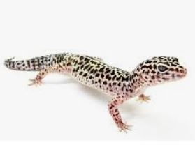
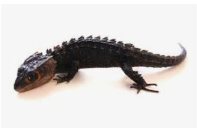
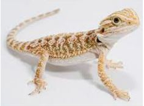
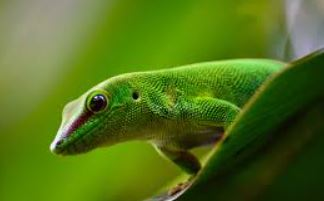
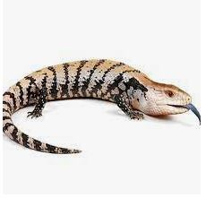

도마뱀

종: 표도마뱀붙이(레오파드게코)
수명: 8~10년
크기: 20~28cm
무게: 60~80g
특징:피부는 굉장히 튼튼하며, 건조한 서식지의 거친 모래와 암석으로 뒤덮인 언덕에서 잘 버틸 수 있다. 등은 작은 결절로 덮여있어 외양과 질감이 거칠고, 옆구리 피부는 얇고 투명하다.
케어 방법: 외온성동물로 낮잠을 자면서 열기와 에너지를 흡수하고 그 힘에 밤에 사냥하고 소화를 한다. 또 크기가 적당하고 상대적으로 관리가 쉽기 때문에 초보자용 파충류 애완동물로
많은 인기가 있다.

종: 레드아이아머드스킨크
수명: 18~25년
크기: 약20cm
성격: 보통 성격이 사나울 것이라고 생각하는 것과 달리 아주 소심하고 겁이 많은 종이다. 겁이 많기 때문에 지속적인 관심을 줄 경우 극심한 스트레스를 받을 수 있다.
특징: 외모가 용을 닮았고 빨강색의 큰 두 눈을 가지고 있는 것이 큰 특징이다. 하지만 예민한 종이기 때문에 사육을 하면서 돌연사가 자주 일어난다.
케어 방법: 온도가 낮고 습한 곳에서 서식을 하다보니 20~26도 사이가 적당하며 습도는 60%~80%를 맞춰줘야한다. 예민한 성격을 가지고 있어 온도가 30도만 넘어가도 쉽게 죽어버린다.

종: 턱수염도마뱀(비어디드드래곤)
수명: 야생에서3~5년 ,사육시 7~15
크기: 약40~55cm
성격: 사납게 생긴 외모와 달리 매우 온순하다.
특징: 비늘이 뾰족뾰족하게 돋아난 외형이 설화 속 드래곤을 연상케 하고, 목 주위에 가시 같은 비늘이 마치 턱수염처럼 보이기도 한다.
케어 방법: UVB와 열전구를 설치하여 하루 12시간씩 켜놓아야 한다. 온도는 26~29도를 맞춰줘야 개체가 스스로 온도조절을 할 수 있고 습도는 30~50%정도로 굳이 높게 해줄 필요가 없다.

종: 미국도마뱀(녹색아놀도마뱀)
수명: 4~8년
크기: 12.5~20.3cm
특징: 머리는 길고 눈과 콧구멍 사이에 점이 있다. 발가락은 기어다니는 것을 쉽게하기 위한 접착 패드가 있다.
성격: 수컷 아놀은 지배적인 성향이 매우 강하여 여러마리의 사육이 되지 않는다.

종: 블루텅스킨크
수명: 10~15년
크기: 약 60cm
특징: 넓은 머리와 미끄러운 비늘로 덮인 뚱뚱한 몸통, 짧은 다리와 가늘고 긴 꼬리가 있지만 큰 특징은 파란 혀바닥을 가진 점이다.
성격: 활동적이면서 온순하고 겁이 많다. 위협을 받으면 쉿소리를 내고 입을 벌리며 푸른 혀를 흔든다.
케어방법: 변온동물로 스스로 체온조절을 할 수 없어 32~35도의 온도를 유지하고 습도는 60~70%를 유지해줘야한다. 건조한 환경에는 탈피를 위해 습도를 어느정도 유지해줘야한다.